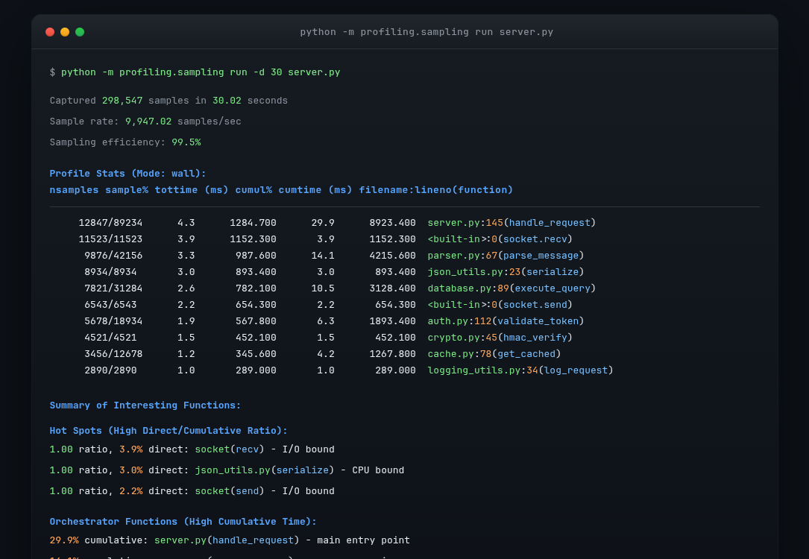
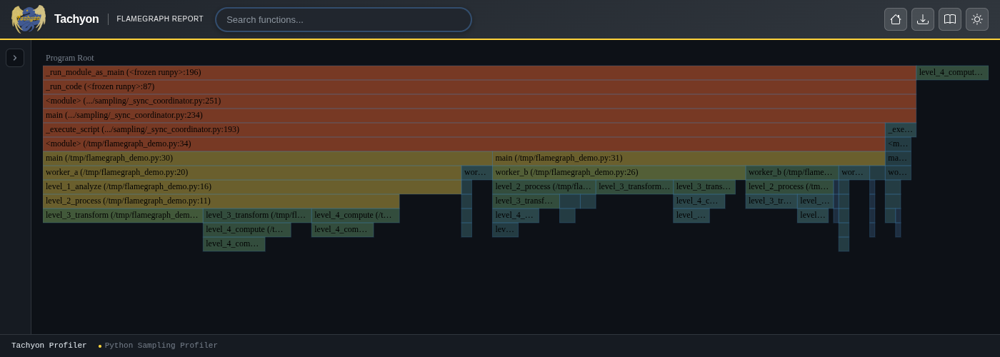
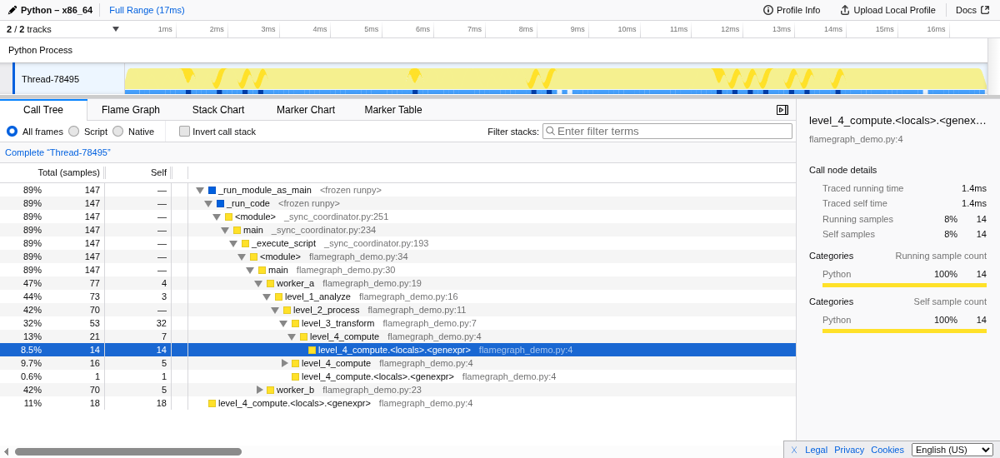
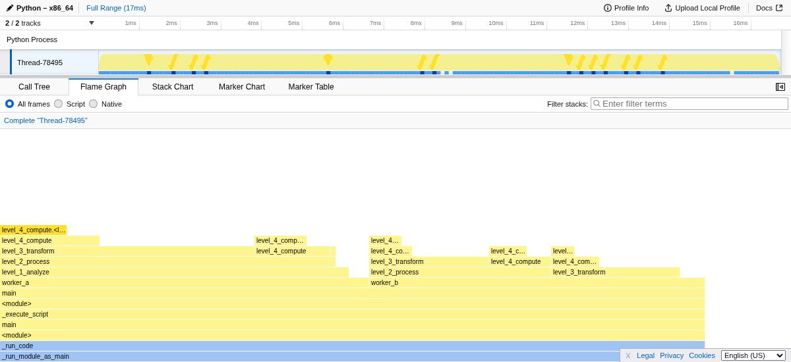
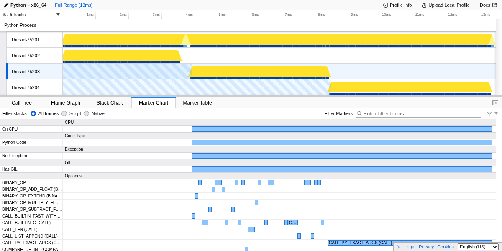
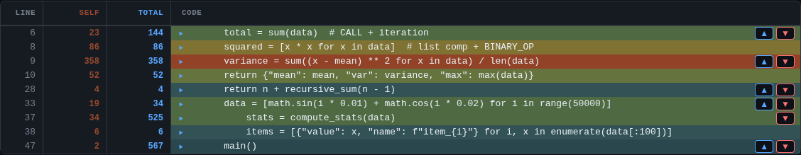
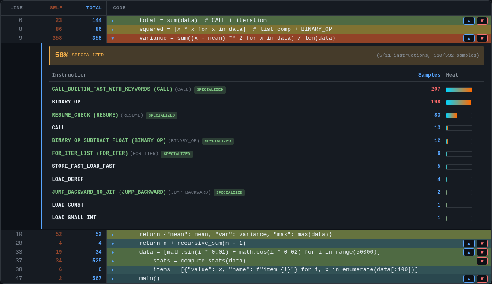
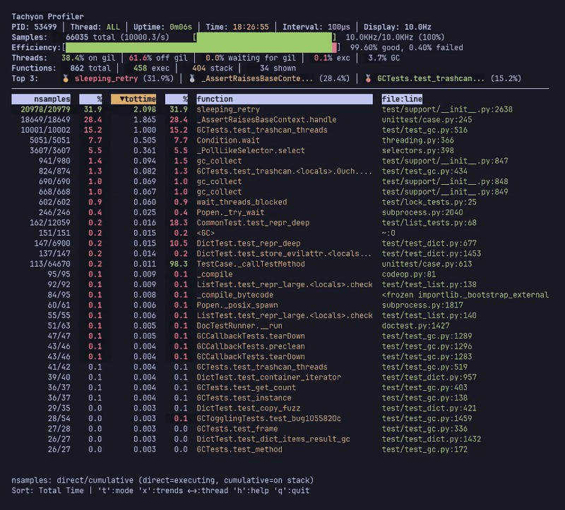
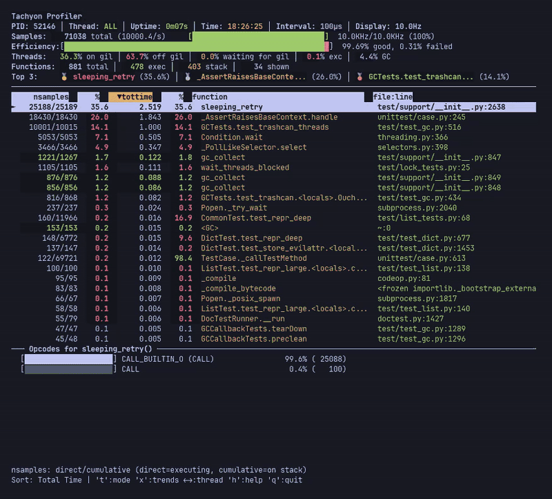

profiling.sampling --- Statistical profiler¶
在 3.15 版被加入.
Source code: Lib/profiling/sampling/
The profiling.sampling module, named Tachyon, provides statistical
profiling of Python programs through periodic stack sampling. Tachyon can
run scripts directly or attach to any running Python process without requiring
code changes or restarts. Because sampling occurs externally to the target
process, overhead is virtually zero, making Tachyon suitable for both
development and production environments.
What is statistical profiling?¶
Statistical profiling builds a picture of program behavior by periodically capturing snapshots of the call stack. Rather than instrumenting every function call and return as deterministic profilers do, Tachyon reads the call stack at regular intervals to record what code is currently running.
This approach rests on a simple principle: functions that consume significant CPU time will appear frequently in the collected samples. By gathering thousands of samples over a profiling session, Tachyon constructs an accurate statistical estimate of where time is spent. The more samples collected, the more precise this estimate becomes.
The following interactive visualization demonstrates how sampling profiling works. Press Play to watch a Python program execute, and observe how the profiler periodically captures snapshots of the call stack. Adjust the sample interval to see how sampling frequency affects the results.
How time is estimated¶
The time values shown in Tachyon's output are estimates derived from sample counts, not direct measurements. Tachyon counts how many times each function appears in the collected samples, then multiplies by the sampling interval to estimate time.
For example, with a 10 kHz sampling rate over a 10-second profile, Tachyon collects approximately 100,000 samples. If a function appears in 5,000 samples (5% of total), Tachyon estimates it consumed 5% of the 10-second duration, or about 500 milliseconds. This is a statistical estimate, not a precise measurement.
The accuracy of these estimates depends on sample count. With 100,000 samples, a function showing 5% has a margin of error of roughly ±0.5%. With only 1,000 samples, the same 5% measurement could actually represent anywhere from 3% to 7% of real time.
This is why longer profiling durations and shorter sampling intervals produce more reliable results---they collect more samples. For most performance analysis, the default settings provide sufficient accuracy to identify bottlenecks and guide optimization efforts.
Because sampling is statistical, results will vary slightly between runs. A function showing 12% in one run might show 11% or 13% in the next. This is normal and expected. Focus on the overall pattern rather than exact percentages, and don't worry about small variations between runs.
When to use a different approach¶
Statistical sampling is not ideal for every situation.
For very short scripts that complete in under one second, the profiler may not
collect enough samples for reliable results. Use profiling.tracing
instead, or run the script in a loop to extend profiling time.
When you need exact call counts, sampling cannot provide them. Sampling
estimates frequency from snapshots, so if you need to know precisely how many
times a function was called, use profiling.tracing.
When comparing two implementations where the difference might be only 1-2%,
sampling noise can obscure real differences. Use timeit for
micro-benchmarks or profiling.tracing for precise measurements.
The key difference from profiling.tracing is how measurement happens.
A tracing profiler instruments your code, recording every function call and
return. This provides exact call counts and precise timing but adds overhead
to every function call. A sampling profiler, by contrast, observes the program
from outside at fixed intervals without modifying its execution. Think of the
difference like this: tracing is like having someone follow you and write down
every step you take, while sampling is like taking photographs every second
and inferring your path from those snapshots.
This external observation model is what makes sampling profiling practical for production use. The profiled program runs at full speed because there is no instrumentation code running inside it, and the target process is never stopped or paused during sampling---Tachyon reads the call stack directly from the process's memory while it continues to run. You can attach to a live server, collect data, and detach without the application ever knowing it was observed. The trade-off is that very short-lived functions may be missed if they happen to complete between samples.
Statistical profiling excels at answering the question, "Where is my program
spending time?" It reveals hotspots and bottlenecks in production code where
deterministic profiling overhead would be unacceptable. For exact call counts
and complete call graphs, use profiling.tracing instead.
Quick examples¶
Profile a script and see the results immediately:
python -m profiling.sampling run script.py
Profile a module with arguments:
python -m profiling.sampling run -m mypackage.module arg1 arg2
Generate an interactive flame graph:
python -m profiling.sampling run --flamegraph -o profile.html script.py
Attach to a running process by PID:
python -m profiling.sampling attach 12345
Print a single snapshot of a running process's stack:
python -m profiling.sampling dump 12345
Use live mode for real-time monitoring (press q to quit):
python -m profiling.sampling run --live script.py
Profile for 60 seconds with a faster sampling rate:
python -m profiling.sampling run -d 60 -r 20khz script.py
Generate a line-by-line heatmap:
python -m profiling.sampling run --heatmap script.py
Enable opcode-level profiling to see which bytecode instructions are executing:
python -m profiling.sampling run --opcodes --flamegraph script.py
Commands¶
Tachyon operates through several subcommands. run and attach collect
samples over time; dump captures a single snapshot; replay converts
binary profiles to other formats.
The run command¶
The run command launches a Python script or module and profiles it from
startup:
python -m profiling.sampling run script.py
python -m profiling.sampling run -m mypackage.module
When profiling a script, the profiler starts the target in a subprocess, waits
for it to initialize, then begins collecting samples. The -m flag
indicates that the target should be run as a module (equivalent to
python -m). Arguments after the target are passed through to the
profiled program:
python -m profiling.sampling run script.py --config settings.yaml
The attach command¶
The attach command connects to an already-running Python process by its
process ID:
python -m profiling.sampling attach 12345
This command is particularly valuable for investigating performance issues in production systems. The target process requires no modification and need not be restarted. The profiler attaches, collects samples for the specified duration, then detaches and produces output.
python -m profiling.sampling attach --live 12345
python -m profiling.sampling attach --flamegraph -d 30 -o profile.html 12345
On most systems, attaching to another process requires appropriate permissions. See Platform requirements for platform-specific requirements.
The dump command¶
The dump command prints a single snapshot of a running process's Python
stack and exits, similar to a traceback:
python -m profiling.sampling dump 12345
Unlike attach, dump does not run a sampling loop: it reads the
stack once. This is useful for investigating hung or unresponsive
processes, or for answering "what is this process doing right now?".
The output mirrors a traceback (most recent call last) and annotates each thread with its current state (main thread, has GIL, on CPU, waiting for GIL, has exception, or idle):
Stack dump for PID 12345, thread 140735 (main thread, has GIL, on CPU; most recent call last):
File "server.py", line 28, in serve
await handle_request(req)
File "handler.py", line 91, in handle_request
result = expensive_call(req)
When the target's source files are readable, dump prints the source
line for each frame and highlights the executing expression.
Like attach, dump requires permission to read the target process's
memory. See Platform requirements.
The dump command supports the following options:
-a,--all-threadsDump every thread in the target process. Without this flag only the main thread is shown.
--nativeInclude synthetic
<native>frames marking transitions into C extensions or other non-Python code.--no-gcHide the synthetic
<GC>frames that mark active garbage collection.--opcodesAnnotate each frame with the bytecode opcode the thread is currently executing (for example,
opcode=CALL_KW). Useful for instruction-level investigation, including identifying specializations chosen by the adaptive interpreter.--async-awareReconstruct stacks across
awaitboundaries.dumpwalks the task graph and emits one section per task, with<task>markers separating coroutines awaiting each other.--async-mode {running,all}Controls which tasks are included when
--async-awareis enabled.runningshows only the task currently executing on each thread;all(the default fordump) also includes tasks suspended on a wait.attach's default for this flag isrunning;dumpdefaults toallbecause a single snapshot is most useful when it shows the full task graph.--blockingPause every thread in the target while reading its stack and resume them after. Guarantees a fully consistent snapshot at the cost of briefly stopping the target. Without it,
dumpreads memory while the target keeps running, which is faster but can occasionally produce a torn stack.
The replay command¶
The replay command converts binary profile files to other output formats:
python -m profiling.sampling replay profile.bin
python -m profiling.sampling replay --flamegraph -o profile.html profile.bin
This command is useful when you have captured profiling data in binary format and want to analyze it later or convert it to a visualization format. Binary profiles can be replayed multiple times to different formats without re-profiling.
# 將二進位檔轉換為 pstats（預設，輸出至 stdout）
python -m profiling.sampling replay profile.bin
# 將二進位檔轉換為火焰圖
python -m profiling.sampling replay --flamegraph -o output.html profile.bin
# 將二進位檔轉換為供 Firefox Profiler 使用的 gecko 格式
python -m profiling.sampling replay --gecko -o profile.json profile.bin
# 將二進位檔轉換為熱圖
python -m profiling.sampling replay --heatmap -o my_heatmap profile.bin
Profiling in production¶
The sampling profiler is designed for production use. It imposes no measurable overhead on the target process because it reads memory externally rather than instrumenting code. The target application continues running at full speed and is unaware it is being profiled.
When profiling production systems, keep these guidelines in mind:
Start with shorter durations (10-30 seconds) to get quick results, then extend if you need more statistical accuracy. By default, profiling runs until the target process completes, which is usually sufficient to identify major hotspots.
If possible, profile during representative load rather than peak traffic. Profiles collected during normal operation are easier to interpret than those collected during unusual spikes.
The profiler itself consumes some CPU on the machine where it runs (not on the target process). On the same machine, this is typically negligible. When profiling remote processes, network latency does not affect the target.
Results from production may differ from development due to different data sizes, concurrent load, or caching effects. This is expected and is often exactly what you want to capture.
Platform requirements¶
The profiler reads the target process's memory to capture stack traces. This requires elevated permissions on most operating systems.
Linux
On Linux, the profiler uses ptrace or process_vm_readv to read the
target process's memory. This typically requires one of:
Running as root
Having the
CAP_SYS_PTRACEcapabilityAdjusting the Yama ptrace scope:
/proc/sys/kernel/yama/ptrace_scope
The default ptrace_scope of 1 restricts ptrace to parent processes only. To allow attaching to any process owned by the same user, set it to 0:
echo 0 | sudo tee /proc/sys/kernel/yama/ptrace_scope
macOS
On macOS, the profiler uses task_for_pid() to access the target process.
This requires one of:
Running as root
The profiler binary having the
com.apple.security.cs.debuggerentitlementSystem Integrity Protection (SIP) being disabled (not recommended)
Windows
On Windows, the profiler requires administrative privileges or the
SeDebugPrivilege privilege to read another process's memory.
Version compatibility¶
The profiler and target process must run the same Python minor version (for example, both Python 3.15). Attaching from Python 3.14 to a Python 3.15 process is not supported.
Additional restrictions apply to pre-release Python versions: if either the profiler or target is running a pre-release (alpha, beta, or release candidate), both must run the exact same version.
On free-threaded Python builds, the profiler cannot attach from a free-threaded build to a standard build, or vice versa.
Sampling configuration¶
Before exploring the various output formats and visualization options, it is important to understand how to configure the sampling process itself. The profiler offers several options that control how frequently samples are collected, how long profiling runs, which threads are observed, and what additional context is captured in each sample.
The default configuration works well for most use cases:
選項 |
預設 |
|---|---|
Default for |
1 kHz |
Default for |
Run to completion |
Default for |
Main thread only |
Default for |
No |
Default for |
|
Default for |
Wall-clock mode (all samples recorded) |
Default for |
Disabled |
Default for |
Disabled |
Default for |
Disabled (non-blocking sampling) |
Sampling rate and duration¶
The two most fundamental parameters are the sampling rate and duration. Together, these determine how many samples will be collected during a profiling session.
The --sampling-rate option (-r) sets how frequently samples
are collected. The default is 1 kHz (1,000 samples per second):
python -m profiling.sampling run -r 20khz script.py
Higher rates capture more samples and provide finer-grained data at the cost of slightly higher profiler CPU usage. Lower rates reduce profiler overhead but may miss short-lived functions. For most applications, the default rate provides a good balance between accuracy and overhead.
The --duration option (-d) sets how long to profile in seconds. By
default, profiling continues until the target process exits or is interrupted:
python -m profiling.sampling run -d 60 script.py
Specifying a duration is useful when attaching to long-running processes or when you want to limit profiling to a specific time window. When profiling a script, the default behavior of running to completion is usually what you want.
Thread selection¶
Python programs often use multiple threads, whether explicitly through the
threading module or implicitly through libraries that manage thread
pools.
By default, the profiler samples only the main thread. The --all-threads
option (-a) enables sampling of all threads in the process:
python -m profiling.sampling run -a script.py
Multi-thread profiling reveals how work is distributed across threads and can identify threads that are blocked or starved. Each thread's samples are combined in the output, with the ability to filter by thread in some formats. This option is particularly useful when investigating concurrency issues or when work is distributed across a thread pool.
Blocking mode¶
By default, Tachyon reads the target process's memory without stopping it. This non-blocking approach is ideal for most profiling scenarios because it imposes virtually zero overhead on the target application: the profiled program runs at full speed and is unaware it is being observed.
However, non-blocking sampling can occasionally produce incomplete or inconsistent stack traces in applications with many generators or coroutines that rapidly switch between yield points, or in programs with very fast-changing call stacks where functions enter and exit between the start and end of a single stack read, resulting in reconstructed stacks that mix frames from different execution states or that never actually existed.
For these cases, the --blocking option stops the target process during
each sample:
python -m profiling.sampling run --blocking script.py
python -m profiling.sampling attach --blocking 12345
When blocking mode is enabled, the profiler suspends the target process, reads its stack, then resumes it. This guarantees that each captured stack represents a real, consistent snapshot of what the process was doing at that instant. The trade-off is that the target process runs slower because it is repeatedly paused.
警告
Do not use very high sample rates (low --interval values) with blocking
mode. Suspending and resuming a process takes time, and if the sampling
interval is too short, the target will spend more time stopped than running.
For blocking mode, intervals of 1000 microseconds (1 millisecond) or higher
are recommended. The default 100 microsecond interval may cause noticeable
slowdown in the target application.
Use blocking mode only when you observe inconsistent stacks in your profiles, particularly with generator-heavy or coroutine-heavy code. For most applications, the default non-blocking mode provides accurate results with zero impact on the target process.
Special frames¶
The profiler can inject artificial frames into the captured stacks to provide additional context about what the interpreter is doing at the moment each sample is taken. These synthetic frames help distinguish different types of execution that would otherwise be invisible.
The --native option adds <native> frames to indicate when Python has
called into C code (extension modules, built-in functions, or the interpreter
itself):
python -m profiling.sampling run --native script.py
These frames help distinguish time spent in Python code versus time spent in native libraries. Without this option, native code execution appears as time in the Python function that made the call. This is useful when optimizing code that makes heavy use of C extensions like NumPy or database drivers.
By default, the profiler includes <GC> frames when garbage collection is
active. The --no-gc option suppresses these frames:
python -m profiling.sampling run --no-gc script.py
GC frames help identify programs where garbage collection consumes significant
time, which may indicate memory allocation patterns worth optimizing. If you
see substantial time in <GC> frames, consider investigating object
allocation rates or using object pooling.
Opcode-aware profiling¶
The --opcodes option enables instruction-level profiling that captures
which Python bytecode instructions are executing at each sample:
python -m profiling.sampling run --opcodes --flamegraph script.py
This feature provides visibility into Python's bytecode execution, including
adaptive specialization optimizations. When a generic instruction like
LOAD_ATTR is specialized at runtime into a more efficient variant like
LOAD_ATTR_INSTANCE_VALUE, the profiler shows both the specialized name
and the base instruction.
Opcode information appears in several output formats:
Flame graphs: Hovering over a frame displays a tooltip with a bytecode instruction breakdown, showing which opcodes consumed time in that function
Heatmap: Expandable bytecode panels per source line show instruction breakdown with specialization percentages
Live mode: An opcode panel shows instruction-level statistics for the selected function, accessible via keyboard navigation
Gecko format: Opcode transitions are emitted as interval markers in the Firefox Profiler timeline
This level of detail is particularly useful for:
Understanding the performance impact of Python's adaptive specialization
Identifying hot bytecode instructions that might benefit from optimization
Analyzing the effectiveness of different code patterns at the instruction level
Debugging performance issues that occur at the bytecode level
The --opcodes option is compatible with --live, --flamegraph,
--heatmap, and --gecko formats. It requires additional memory to store
opcode information and may slightly reduce sampling performance, but provides
unprecedented visibility into Python's execution model.
Real-time statistics¶
The --realtime-stats option displays sampling rate statistics during
profiling:
python -m profiling.sampling run --realtime-stats script.py
This shows the actual achieved sampling rate, which may be lower than requested if the profiler cannot keep up. The statistics help verify that profiling is working correctly and that sufficient samples are being collected. See Sampling efficiency for details on interpreting these metrics.
Subprocess profiling¶
The --subprocesses option enables automatic profiling of subprocesses
spawned by the target:
python -m profiling.sampling run --subprocesses script.py
python -m profiling.sampling attach --subprocesses 12345
When enabled, the profiler monitors the target process for child process
creation. When a new Python child process is detected, a separate profiler
instance is automatically spawned to profile it. This is useful for
applications that use multiprocessing, subprocess,
concurrent.futures with ProcessPoolExecutor,
or other process spawning mechanisms.
from concurrent.futures import ProcessPoolExecutor
import math
def compute_factorial(n):
total = 0
for i in range(50):
total += math.factorial(n)
return total
if __name__ == "__main__":
numbers = [5000 + i * 100 for i in range(50)]
with ProcessPoolExecutor(max_workers=4) as executor:
results = list(executor.map(compute_factorial, numbers))
print(f"Computed {len(results)} factorials")
python -m profiling.sampling run --subprocesses --flamegraph worker_pool.py
This produces separate flame graphs for the main process and each worker
process: flamegraph_<main_pid>.html, flamegraph_<worker1_pid>.html,
and so on.
Each subprocess receives its own output file. The filename is derived from the specified output path (or the default) with the subprocess's process ID appended:
If you specify
-o profile.html, subprocesses produceprofile_12345.html,profile_12346.html, and so onWith default output, subprocesses produce files like
flamegraph_12345.htmlor directories likeheatmap_12345For pstats format (which defaults to stdout), subprocesses produce files like
profile_12345.pstats
The subprocess profilers inherit most sampling options from the parent (sampling rate, duration, thread selection, native frames, GC frames, async-aware mode, and output format). All Python descendant processes are profiled recursively, including grandchildren and further descendants.
Subprocess detection works by periodically scanning for new descendants of the target process and checking whether each new process is a Python process by probing the process memory for Python runtime structures. Non-Python subprocesses (such as shell commands or external tools) are ignored.
There is a limit of 100 concurrent subprocess profilers to prevent resource exhaustion in programs that spawn many processes. If this limit is reached, additional subprocesses are not profiled and a warning is printed.
The --subprocesses option is incompatible with --live mode
because live mode uses an interactive terminal interface that cannot
accommodate multiple concurrent profiler displays.
Sampling efficiency¶
Sampling efficiency metrics help assess the quality of the collected data. These metrics appear in the profiler's terminal output and in the flame graph sidebar.
Sampling efficiency is the percentage of sample attempts that succeeded. Each sample attempt reads the target process's call stack from memory. An attempt can fail if the process is in an inconsistent state at the moment of reading, such as during a context switch or while the interpreter is updating its internal structures. A low efficiency may indicate that the profiler could not keep up with the requested sampling rate, often due to system load or an overly aggressive interval setting.
Missed samples is the percentage of expected samples that were not collected. Based on the configured interval and duration, the profiler expects to collect a certain number of samples. Some samples may be missed if the profiler falls behind schedule, for example when the system is under heavy load. A small percentage of missed samples is normal and does not significantly affect the statistical accuracy of the profile.
Both metrics are informational. Even with some failed attempts or missed samples, the profile remains statistically valid as long as enough samples were collected. The profiler reports the actual number of samples captured, which you can use to judge whether the data is sufficient for your analysis.
Profiling modes¶
The sampling profiler supports four modes that control which samples are recorded. The mode determines what the profile measures: total elapsed time, CPU execution time, time spent holding the global interpreter lock, or exception handling.
Wall-clock mode¶
Wall-clock mode (--mode=wall) captures all samples regardless of what the
thread is doing. This is the default mode and provides a complete picture of
where time passes during program execution:
python -m profiling.sampling run --mode=wall script.py
In wall-clock mode, samples are recorded whether the thread is actively executing Python code, waiting for I/O, blocked on a lock, or sleeping. This makes wall-clock profiling ideal for understanding the overall time distribution in your program, including time spent waiting.
If your program spends significant time in I/O operations, network calls, or sleep, wall-clock mode will show these waits as time attributed to the calling function. This is often exactly what you want when optimizing end-to-end latency.
CPU mode¶
CPU mode (--mode=cpu) records samples only when the thread is actually
executing on a CPU core:
python -m profiling.sampling run --mode=cpu script.py
Samples taken while the thread is sleeping, blocked on I/O, or waiting for a lock are discarded. The resulting profile shows where CPU cycles are consumed, filtering out idle time.
CPU mode is useful when you want to focus on computational hotspots without being distracted by I/O waits. If your program alternates between computation and network calls, CPU mode reveals which computational sections are most expensive.
Comparing wall-clock and CPU profiles¶
Running both wall-clock and CPU mode profiles can reveal whether a function's time is spent computing or waiting.
If a function appears prominently in both profiles, it is a true computational hotspot---actively using the CPU. Optimization should focus on algorithmic improvements or more efficient code.
If a function is high in wall-clock mode but low or absent in CPU mode, it is I/O-bound or waiting. The function spends most of its time waiting for network, disk, locks, or sleep. CPU optimization won't help here; consider async I/O, connection pooling, or reducing wait time instead.
import time
def do_sleep():
time.sleep(2)
def do_compute():
sum(i**2 for i in range(1000000))
if __name__ == "__main__":
do_sleep()
do_compute()
python -m profiling.sampling run --mode=wall script.py # do_sleep 約 98%，do_compute 約 1%
python -m profiling.sampling run --mode=cpu script.py # 沒有 do_sleep，do_compute 佔主導
GIL mode¶
GIL mode (--mode=gil) records samples only when the thread holds Python's
global interpreter lock:
python -m profiling.sampling run --mode=gil script.py
The GIL is held only while executing Python bytecode. When Python calls into C extensions, performs I/O operations, or executes native code, the GIL is typically released. This means GIL mode effectively measures time spent running Python code specifically, filtering out time in native libraries.
In multi-threaded programs, GIL mode reveals which code is preventing other threads from running Python bytecode. Since only one thread can hold the GIL at a time, functions that appear frequently in GIL mode profiles are monopolizing the interpreter.
GIL mode helps answer questions like "which functions are monopolizing the GIL?" and "why are my other threads starving?" It can also be useful in single-threaded programs to distinguish Python execution time from time spent in C extensions or I/O.
import hashlib
def hash_work():
# C 擴充 - 計算期間會釋放 GIL
for _ in range(200):
hashlib.sha256(b"data" * 250000).hexdigest()
def python_work():
# 純 Python - 計算期間持有 GIL
for _ in range(3):
sum(i**2 for i in range(1000000))
if __name__ == "__main__":
hash_work()
python_work()
python -m profiling.sampling run --mode=cpu script.py # hash_work 約 42%，python_work 約 38%
python -m profiling.sampling run --mode=gil script.py # hash_work 約 5%，python_work 約 60%
Exception mode¶
Exception mode (--mode=exception) records samples only when a thread has
an active exception:
python -m profiling.sampling run --mode=exception script.py
Samples are recorded in two situations: when an exception is being propagated
up the call stack (after raise but before being caught), or when code is
executing inside an except block where exception information is still
present in the thread state.
The following example illustrates which code regions are captured:
def example():
try:
raise ValueError("error") # 會被捕捉：正在引發例外
except ValueError:
process_error() # 會被捕捉：在 except 區塊內
finally:
cleanup() # 不會被捕捉：例外已被處理
def example_propagating():
try:
try:
raise ValueError("error")
finally:
cleanup() # 會被捕捉：例外正在向外傳遞
except ValueError:
pass
def example_no_exception():
try:
do_work()
finally:
cleanup() # 不會被捕捉：未涉及例外
Note that finally blocks are only captured when an exception is actively
propagating through them. Once an except block finishes executing, Python
clears the exception information before running any subsequent finally
block. Similarly, finally blocks that run during normal execution (when no
exception was raised) are not captured because no exception state is present.
This mode is useful for understanding where your program spends time handling
errors. Exception handling can be a significant source of overhead in code
that uses exceptions for flow control (such as StopIteration in iterators)
or in applications that process many error conditions (such as network servers
handling connection failures).
Exception mode helps answer questions like "how much time is spent handling exceptions?" and "which exception handlers are the most expensive?" It can reveal hidden performance costs in code that catches and processes many exceptions, even when those exceptions are handled gracefully. For example, if a parsing library uses exceptions internally to signal format errors, this mode will capture time spent in those handlers even if the calling code never sees the exceptions.
Output formats¶
The profiler produces output in several formats, each suited to different analysis workflows. The format is selected with a command-line flag, and output goes to stdout, a file, or a directory depending on the format.
pstats format¶
The pstats format (--pstats) produces a text table similar to what
deterministic profilers generate. This is the default output format:
python -m profiling.sampling run script.py
python -m profiling.sampling run --pstats script.py


The pstats format displays profiling results in a color-coded table showing function hotspots, sample counts, and timing estimates.¶
Output appears on stdout by default:
Profile Stats (Mode: wall):
nsamples sample% tottime (ms) cumul% cumtime (ms) filename:lineno(function)
234/892 11.7% 234.00 44.6% 892.00 server.py:145(handle_request)
156/156 7.8% 156.00 7.8% 156.00 <built-in>:0(socket.recv)
98/421 4.9% 98.00 21.1% 421.00 parser.py:67(parse_message)
The columns show sampling counts and estimated times:
nsamples: Displayed as
direct/cumulative(for example,10/50). Direct samples are when the function was at the top of the stack, actively executing. Cumulative samples are when the function appeared anywhere on the stack, including when it was waiting for functions it called. If a function shows10/50, it was directly executing in 10 samples and was on the call stack in 50 samples total.sample% and cumul%: Percentages of total samples for direct and cumulative counts respectively.
tottime and cumtime: Estimated wall-clock time based on sample counts and the profiling duration. Time units are selected automatically based on the magnitude: seconds for large values, milliseconds for moderate values, or microseconds for small values.
The output includes a legend explaining each column and a summary of interesting functions that highlights:
Hot spots: Functions with high direct/cumulative sample ratio (ratio close to 1.0). These functions spend most of their time executing their own code rather than waiting for callees. High ratios indicate where CPU time is actually consumed.
Indirect calls: Functions with large differences between cumulative and direct samples. These are orchestration functions that delegate work to other functions. They appear frequently on the stack but rarely at the top.
Call magnification: Functions where cumulative samples far exceed direct samples (high cumulative/direct multiplier). These are frequently-nested functions that appear deep in many call chains.
Use --no-summary to suppress both the legend and summary sections.
To save pstats output to a binary file instead of stdout:
python -m profiling.sampling run -o profile.pstats script.py
The pstats format supports several options for controlling the display.
The --sort option determines the column used for ordering results:
python -m profiling.sampling run --sort=tottime script.py
python -m profiling.sampling run --sort=cumtime script.py
python -m profiling.sampling run --sort=nsamples script.py
The --limit option restricts output to the top N entries:
python -m profiling.sampling run --limit=30 script.py
The --no-summary option suppresses the header summary that precedes the
statistics table.
Collapsed stacks format¶
Collapsed stacks format (--collapsed) produces one line per unique call
stack, with a count of how many times that stack was sampled:
python -m profiling.sampling run --collapsed script.py
The output looks like:
main;process_data;parse_json;decode_utf8 42
main;process_data;parse_json 156
main;handle_request;send_response 89
Each line contains semicolon-separated function names representing the call
stack from bottom to top, followed by a space and the sample count. This
format is designed for compatibility with external flame graph tools,
particularly Brendan Gregg's flamegraph.pl script.
To generate a flame graph from collapsed stacks:
python -m profiling.sampling run --collapsed script.py > stacks.txt
flamegraph.pl stacks.txt > profile.svg
The resulting SVG can be viewed in any web browser and provides an interactive visualization where you can click to zoom into specific call paths.
Flame graph format¶
Flame graph format (--flamegraph) produces a self-contained HTML file with
an interactive flame graph visualization:
python -m profiling.sampling run --flamegraph script.py
python -m profiling.sampling run --flamegraph -o profile.html script.py


The flame graph visualization shows call stacks as nested rectangles, with width proportional to time spent. The sidebar displays runtime statistics, GIL metrics, and hotspot functions.¶
If no output file is specified, the profiler generates a filename based on
the process ID (for example, flamegraph.12345.html).
The generated HTML file requires no external dependencies and can be opened directly in a web browser. The visualization displays call stacks as nested rectangles, with width proportional to time spent. Hovering over a rectangle shows details about that function including source code context, and clicking zooms into that portion of the call tree.
The flame graph interface includes:
A sidebar showing profile summary, thread statistics, sampling efficiency metrics (see Sampling efficiency), and top hotspot functions
Search functionality supporting both function name matching and
file.py:42line patternsPer-thread filtering via dropdown
Dark/light theme toggle (preference saved across sessions)
SVG export for saving the current view
The thread statistics section shows runtime behavior metrics:
GIL Held: percentage of samples where a thread held the global interpreter lock (actively running Python code)
GIL Released: percentage of samples where no thread held the GIL
Waiting GIL: percentage of samples where a thread was waiting to acquire the GIL
GC: percentage of samples during garbage collection
These statistics help identify GIL contention and understand how time is distributed between Python execution, native code, and waiting.
Flame graphs are particularly effective for identifying deep call stacks and understanding the hierarchical structure of time consumption. Wide rectangles at the top indicate functions that consume significant time either directly or through their callees.
Differential flame graphs¶
Differential flame graphs compare two profiling runs to highlight where performance changed. This helps identify regressions introduced by code changes and validate that optimizations achieved their intended effect:
# 擷取基準分析資料
python -m profiling.sampling run --binary -o baseline.bin script.py
# 修改程式碼後，產生差異火焰圖
python -m profiling.sampling run --diff-flamegraph baseline.bin -o diff.html script.py
The visualization draws the current profile with frame widths showing current time consumption, then applies color to indicate how each function changed relative to the baseline.
Color coding:
Red: Functions consuming more time (regressions). Lighter shades indicate modest increases, while darker shades show severe regressions.
Blue: Functions consuming less time (improvements). Lighter shades for modest reductions, darker shades for significant speedups.
Gray: Minimal or no change.
Purple: New functions not present in the baseline.
Frame colors indicate changes in direct time (time when the function was at the top of the stack, actively executing), not cumulative time including callees. Hovering over a frame shows comparison details including baseline time, current time, and the percentage change.
Some call paths may disappear entirely between profiles. These are called elided stacks and occur when optimizations eliminate code paths or certain branches stop executing. If elided stacks are present, an elided toggle appears allowing you to switch between the main differential view and an elided-only view that shows just the removed paths (colored purple).
Gecko format¶
Gecko format (--gecko) produces JSON output compatible with the Firefox
Profiler:
python -m profiling.sampling run --gecko script.py
python -m profiling.sampling run --gecko -o profile.json script.py
The Firefox Profiler is a sophisticated web-based tool originally built for profiling Firefox itself. It provides features beyond basic flame graphs, including a timeline view, call tree exploration, and marker visualization. See the Firefox Profiler documentation for detailed usage instructions.
To use the output, open the Firefox Profiler in your browser and load the JSON file. The profiler runs entirely client-side, so your profiling data never leaves your machine.
Gecko format automatically collects additional metadata about GIL state and CPU activity, enabling analysis features specific to Python's threading model. The profiler emits interval markers that appear as colored bands in the Firefox Profiler timeline:
GIL markers: show when threads hold or release the global interpreter lock
CPU markers: show when threads are executing on CPU versus idle
Code type markers: distinguish Python code from native (C extension) code
GC markers: indicate garbage collection activity
For this reason, the --mode option is not available with Gecko format;
all relevant data is captured automatically.


The Call Tree view shows the complete call hierarchy with sample counts and percentages. The sidebar displays detailed statistics for the selected function including running time and sample distribution.¶


The Flame Graph visualization shows call stacks as nested rectangles. Functions names are visible in the call hierarchy.¶


The Marker Chart displays interval markers including CPU state, GIL
status, and opcodes. With --opcodes enabled, bytecode instructions
like BINARY_OP_ADD_FLOAT, CALL_PY_EXACT_ARGS, and
CALL_LIST_APPEND appear as markers showing execution over time.¶
Heatmap format¶
Heatmap format (--heatmap) generates an interactive HTML visualization
showing sample counts at the source line level:
python -m profiling.sampling run --heatmap script.py
python -m profiling.sampling run --heatmap -o my_heatmap script.py


The heatmap overlays sample counts directly on your source code. Lines are color-coded from cool (few samples) to hot (many samples). Navigation buttons (▲▼) let you jump between callers and callees.¶
Unlike other formats that produce a single file, heatmap output creates a
directory containing HTML files for each profiled source file. If no output
path is specified, the directory is named heatmap_PID.
The heatmap visualization displays your source code with a color gradient indicating how many samples were collected at each line. Hot lines (many samples) appear in warm colors, while cold lines (few or no samples) appear in cool colors. This view helps pinpoint exactly which lines of code are responsible for time consumption.
The heatmap interface provides several interactive features:
Coloring modes: toggle between "Self Time" (direct execution) and "Total Time" (cumulative, including time in called functions)
Cold code filtering: show all lines or only lines with samples
Call graph navigation: each line shows navigation buttons (▲ for callers, ▼ for callees) that let you trace execution paths through your code. When multiple functions called or were called from a line, a menu appears showing all options with their sample counts.
Scroll minimap: a vertical overview showing the heat distribution across the entire file
Hierarchical index: files organized by type (stdlib, site-packages, project) with aggregate sample counts per folder
Dark/light theme: toggle with preference saved across sessions
Line linking: click line numbers to create shareable URLs
When opcode-level profiling is enabled with --opcodes, each hot line
can be expanded to show which bytecode instructions consumed time:


Expanding a hot line reveals the bytecode instructions executed, including specialized variants. The panel shows sample counts per instruction and the overall specialization percentage for the line.¶
Heatmaps are especially useful when you know which file contains a performance issue but need to identify the specific lines. Many developers prefer this format because it maps directly to their source code, making it easy to read and navigate. For smaller scripts and focused analysis, heatmaps provide an intuitive view that shows exactly where time is spent without requiring interpretation of hierarchical visualizations.
Binary format¶
Binary format (--binary) produces a compact binary file for efficient
storage of profiling data:
python -m profiling.sampling run --binary -o profile.bin script.py
python -m profiling.sampling attach --binary -o profile.bin 12345
The --compression option controls data compression:
auto(default): Use zstd compression if available, otherwise no compressionzstd: Force zstd compression (requirescompression.zstdsupport)none: Disable compression
python -m profiling.sampling run --binary --compression=zstd -o profile.bin script.py
To analyze binary profiles, use the replay command to convert them to other formats like flame graphs or pstats output.
Record and replay workflow¶
The binary format combined with the replay command enables a record-and-replay workflow that separates data capture from analysis. Rather than generating visualizations during profiling, you capture raw data to a compact binary file and convert it to different formats later.
This approach has three main benefits:
Sampling runs faster because the work of building data structures for visualization is deferred until replay.
A single binary capture can be converted to multiple output formats without re-profiling: pstats for a quick overview, flame graph for visual exploration, heatmap for line-level detail.
Binary files are compact and easy to share with colleagues who can convert them to their preferred format.
A typical workflow:
# 在正式環境或測試期間擷取分析資料
python -m profiling.sampling attach --binary -o profile.bin 12345
# 之後再以不同格式進行分析
python -m profiling.sampling replay profile.bin
python -m profiling.sampling replay --flamegraph -o profile.html profile.bin
python -m profiling.sampling replay --heatmap -o heatmap profile.bin
Live mode¶
Live mode (--live) provides a terminal-based real-time view of profiling
data, similar to the top command for system processes:
python -m profiling.sampling run --live script.py
python -m profiling.sampling attach --live 12345


Live mode displays real-time profiling statistics, showing combined data from multiple threads in a multi-threaded application.
The display updates continuously as new samples arrive, showing the current
hottest functions. This mode requires the curses module, which is
available on Unix-like systems but not on Windows. The terminal must be at
least 60 columns wide and 12 lines tall; larger terminals display more columns.
The header displays the top 3 hottest functions, sampling efficiency metrics, and thread status statistics (GIL held percentage, CPU usage, GC time). The main table shows function statistics with the currently sorted column indicated by an arrow (▼).
When --opcodes is enabled, an additional opcode panel appears below the
main table, showing instruction-level statistics for the currently selected
function. This panel displays which bytecode instructions are executing most
frequently, including specialized variants and their base opcodes.


Live mode with --opcodes enabled shows an opcode panel with a bytecode
instruction breakdown for the selected function.
Keyboard commands¶
Within live mode, keyboard commands control the display:
- q
Quit the profiler and return to the shell.
- s / S
Cycle through sort orders forward/backward (sample count, percentage, total time, cumulative percentage, cumulative time).
- p
Pause or resume display updates. Sampling continues in the background while the display is paused, so you can freeze the view to examine results without stopping data collection.
- r
Reset all statistics and start fresh. This is disabled after profiling finishes to prevent accidental data loss.
- /
Enter filter mode to search for functions by name. The filter uses case-insensitive substring matching against the filename and function name. Type a pattern and press Enter to apply, or Escape to cancel. Glob patterns and regular expressions are not supported.
- c
Clear the current filter and show all functions again.
- t
Toggle between viewing all threads combined or per-thread statistics. In per-thread mode, a thread counter (for example,
1/4) appears showing your position among the available threads.- ← → or ↑ ↓
In per-thread view, navigate between threads. Navigation wraps around from the last thread to the first and vice versa.
- + / -
Increase or decrease the display refresh rate. The range is 0.05 seconds (20 Hz, very responsive) to 1.0 second (1 Hz, lower overhead). Faster refresh rates use more CPU. The default is 0.1 seconds (10 Hz).
- x
Toggle trend indicators that show whether functions are becoming hotter or cooler over time. When enabled, increasing metrics appear in green and decreasing metrics appear in red, comparing each update to the previous one.
- h or ?
Show the help screen with all available commands.
- j / k (or Up / Down)
Navigate through opcode entries in the opcode panel (when
--opcodesis enabled). These keys scroll through the instruction-level statistics for the currently selected function.
When profiling finishes (duration expires or target process exits), the display shows a "PROFILING COMPLETE" banner and freezes the final results. You can still navigate, sort, and filter the results before pressing q to exit.
Live mode is incompatible with output format options (--collapsed,
--flamegraph, and so on) because it uses an interactive terminal
interface rather than producing file output.
Async-aware profiling¶
For programs using asyncio, the profiler offers async-aware mode
(--async-aware) that reconstructs call stacks based on the task structure
rather than the raw Python frames:
python -m profiling.sampling run --async-aware async_script.py
Standard profiling of async code can be confusing because the physical call
stack often shows event loop internals rather than the logical flow of your
coroutines. Async-aware mode addresses this by tracking which task is running
and presenting stacks that reflect the await chain.
import asyncio
async def fetch(url):
await asyncio.sleep(0.1)
return url
async def main():
for _ in range(50):
await asyncio.gather(fetch("a"), fetch("b"), fetch("c"))
if __name__ == "__main__":
asyncio.run(main())
python -m profiling.sampling run --async-aware --flamegraph -o out.html script.py
備註
Async-aware profiling requires the target process to have the asyncio
module loaded. If you profile a script before it imports asyncio, async-aware
mode will not be able to capture task information.
Async modes¶
The --async-mode option controls which tasks appear in the profile:
python -m profiling.sampling run --async-aware --async-mode=running async_script.py
python -m profiling.sampling run --async-aware --async-mode=all async_script.py
With --async-mode=running (the default), only the task currently executing
on the CPU is profiled. This shows where your program is actively spending time
and is the typical choice for performance analysis.
With --async-mode=all, tasks that are suspended (awaiting I/O, locks, or
other tasks) are also included. This mode is useful for understanding what your
program is waiting on, but produces larger profiles since every suspended task
appears in each sample.
Task markers and stack reconstruction¶
In async-aware profiles, you will see <task> frames that mark boundaries
between asyncio tasks. These are synthetic frames inserted by the profiler to
show the task structure. The task name appears as the function name in these
frames.
When a task awaits another task, the profiler reconstructs the logical call
chain by following the await relationships. Only "leaf" tasks (tasks that
no other task is currently awaiting) generate their own stack entries. Tasks
being awaited by other tasks appear as part of their awaiter's stack instead.
If a task has multiple awaiters (a diamond pattern in the task graph), the
profiler deterministically selects one parent and annotates the task marker
with the number of parents, for example MyTask (2 parents). This indicates
that alternate execution paths exist but are not shown in this particular stack.
Option restrictions¶
Async-aware mode uses a different stack reconstruction mechanism and is
incompatible with: --native, --no-gc, --all-threads, and
--mode=cpu or --mode=gil.
命令列介面¶
The complete command-line interface for reference.
Global options¶
- run¶
Run and profile a Python script or module.
- attach¶
Attach to and profile a running process by PID.
- dump¶
Print a single one-shot snapshot of a running process's Python stack.
- replay¶
Convert a binary profile file to another output format.
Dump options¶
The following options apply to the dump subcommand:
- -a, --all-threads¶
Dump all threads in the target process instead of just the main thread.
- --native¶
Include
<native>frames for non-Python code.
- --no-gc¶
Exclude
<GC>frames for active garbage collection.
- --opcodes¶
Show bytecode opcode names when available.
- --async-aware¶
Reconstruct the stack across
awaitboundaries for asyncio applications.
- --async-mode <mode>¶
Async stack mode:
running(only the running task) orall(all tasks including waiting). Defaults toallfordump. Requires--async-aware.
- --blocking¶
Pause all threads in the target process while reading the stack.
Sampling options¶
- -r <rate>, --sampling-rate <rate>¶
Sampling rate (for example,
10000,10khz,10k). Default:1khz.
- -d <seconds>, --duration <seconds>¶
Profiling duration in seconds. Default: run to completion.
- -a, --all-threads¶
Sample all threads, not just the main thread.
- --realtime-stats¶
Display sampling statistics during profiling.
- --native¶
Include
<native>frames for non-Python code.
- --no-gc¶
Exclude
<GC>frames for garbage collection.
- --async-aware¶
Enable async-aware profiling for asyncio programs.
- --opcodes¶
Gather bytecode opcode information for instruction-level profiling. Shows which bytecode instructions are executing, including specializations. Compatible with
--live,--flamegraph,--heatmap, and--geckoformats only.
- --subprocesses¶
Also profile subprocesses. Each subprocess gets its own profiler instance and output file. Incompatible with
--live.
- --blocking¶
Pause the target process during each sample. This ensures consistent stack traces at the cost of slowing down the target. Use with longer intervals (1000 µs or higher) to minimize impact. See Blocking mode for details.
Mode options¶
- --mode <mode>¶
Sampling mode:
wall(default),cpu,gil, orexception. Thecpu,gil, andexceptionmodes are incompatible with--async-aware.
- --async-mode <mode>¶
Async profiling mode:
running(default) orall. Requires--async-aware.
Output options¶
- --pstats¶
Generate pstats statistics. This is the default. When written to stdout, the output is a text table; with
-o, it is a binary pstats file.
- --collapsed¶
Generate collapsed stack format for external flame graph tools.
- --flamegraph¶
Generate self-contained HTML flame graph.
- --diff-flamegraph <baseline.bin>¶
Generate differential flamegraph comparing to a baseline binary profile.
- --gecko¶
Generate Gecko JSON format for Firefox Profiler.
- --heatmap¶
Generate HTML heatmap with line-level sample counts.
- --binary¶
Generate high-performance binary format for later conversion with the
replaycommand.
- --compression <type>¶
Compression for binary format:
auto(use zstd if available, default),zstd, ornone.
- -o <path>, --output <path>¶
Output file or directory path. Default behavior varies by format:
--pstatsprints a text table to stdout, while-owrites a binary pstats file. Other formats generate a file named<format>_<PID>.<ext>(for example,flamegraph_12345.html).--heatmapcreates a directory namedheatmap_<PID>.
- --browser¶
Automatically open HTML output (
--flamegraphand--heatmap) in your default web browser after generation. When profiling with--subprocesses, only the main process opens the browser; subprocess outputs are never auto-opened.
pstats display options¶
These options apply only to pstats format output.
- --sort <key>¶
Sort order:
nsamples,tottime,cumtime,sample-pct,cumul-pct,nsamples-cumul, orname. Default:nsamples.
- -l <count>, --limit <count>¶
Maximum number of entries to display. Default: 15.
- --no-summary¶
Omit the Legend and Summary of Interesting Functions sections from output.
Run command options¶
- -m, --module¶
Treat the target as a module name rather than a script path.
- --live¶
Start interactive terminal interface instead of batch profiling.
也參考
profilingOverview of Python profiling tools and guidance on choosing a profiler.
profiling.tracingDeterministic tracing profiler for exact call counts and timing.
pstatsStatistics analysis for profile data.
- Firefox Profiler
Web-based profiler that accepts Gecko format output. See the documentation for usage details.
- FlameGraph
Tools for generating flame graphs from collapsed stack format.